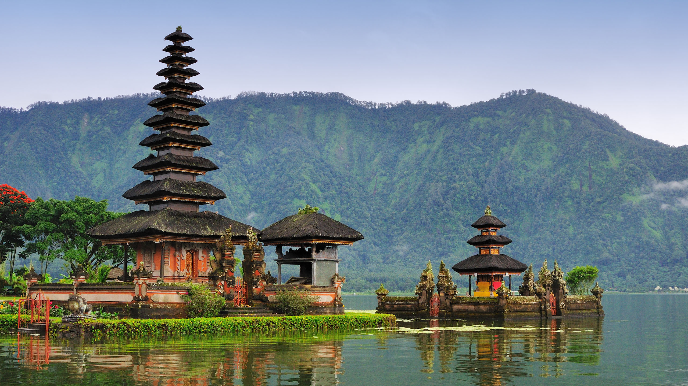

The Island of the Gods
Sprawling rice terraces, towering volcanic mountains, and serene, temple-filled villages characterize Bali's diverse and striking natural beauty. From the iconic black sand beaches of Canggu to the tranquil waters of Ubud's Tegalalang, the island offers a wide range of landscapes to explore and experience.
Rate : 8,6/10